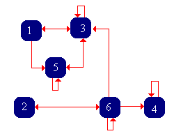
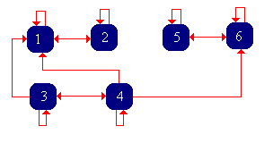

Dalam bagian ini, kita mempelajari beberapa bagian terdalam dan paling menarik dari teori rantai Markov waktu diskret, yang melibatkan dua gagasan berbeda tetapi saling melengkapi: distribusi invarian dan distribusi limit. Teori proses pembaruan memainkan peranan penting.
Teori Dasar
Seperti biasa, titik awal kita adalah rantai Markov waktu diskret (homogen terhadap waktu) \( \bs{X} = (X_0, X_1, X_2, \ldots) \) dengan ruang keadaan (terhitung) \( S \) dan matriks probabilitas transisi \( P \). Sebagai landasannya tentu terdapat ruang probabilitas \( (\Omega, \mathscr{F}, \P) \), dengan \( \Omega \) sebagai ruang sampel, \( \mathscr{F} \) sebagai \( \sigma \)-aljabar kejadian, dan \( \P \) sebagai ukuran probabilitas pada \( (\Omega, \mathscr{F}) \). Untuk \( n \in \N \), misalkan \( \mathscr{F}_n = \sigma\{X_0, X_1, \ldots, X_n\} \), yaitu \( \sigma \)-aljabar kejadian yang ditentukan oleh rantai hingga waktu \( n \), sehingga \( \mathfrak{F} = \{\mathscr{F}_0, \mathscr{F}_1, \ldots\}\) adalah filtrasi alami yang berkaitan dengan \( \bs{X} \).
Proses Pembaruan Tertanam
Misalkan \( y \in S \) dan \( n \in \N_+ \). Banyaknya kunjungan ke \( y \) selama \( n \) satuan waktu positif pertama kita nyatakan dengan \[ N_{y,n} = \sum_{i=1}^n \bs{1}(X_i = y) \] Perhatikan bahwa \( N_{y,n} \to N_y \) ketika \( n \to \infty \), dengan \[ N_y = \sum_{i=1}^\infty \bs{1}(X_i = y) \] sebagai jumlah total kunjungan ke \( y \) pada waktu positif, salah satu peubah acak penting yang kita pelajari dalam bagian tentang keadaan transien dan rekuren. Untuk \( n \in \N_+ \), waktu kunjungan ke-\( n \) ke \( y \) kita nyatakan dengan \[ \tau_{y,n} = \min\{k \in \N_+: N_{y,k} = n\} \] dengan, seperti biasa, \( \min(\emptyset) = \infty \). Perhatikan bahwa \( \tau_{y,1} \) adalah waktu kunjungan pertama ke \( y \), yang kita nyatakan secara sederhana dengan \(\tau_y \) dalam bagian tentang keadaan transien dan rekuren. Waktu-waktu kunjungan ke \( y \) merupakan waktu henti bagi \( \bs{X} \). Artinya, \( \{\tau_{y,n} = k\} \in \mathscr{F}_k \) untuk \( n \in \N_+ \) dan \( k \in \N \). Ingat pula definisi probabilitas pencapaian keadaan \( y \) jika dimulai dari keadaan \( x \): \[ H(x, y) = \P\left(\tau_y \lt \infty \mid X_0 = x\right), \quad (x, y) \in S^2 \]
Misalkan \( x, \, y \in S \), keadaan \( y \) rekuren, dan \( X_0 = x \).
- Jika \( x = y \), kunjungan-kunjungan berturut-turut ke \( y \) membentuk proses pembaruan.
- Jika \( x \ne y \) dan \( H(x,y)=1 \), kunjungan-kunjungan berturut-turut ke \( y \) membentuk proses pembaruan tertunda. Jika hanya \(x\to y\), pernyataan tersebut berlaku setelah pengondisian pada \(\{\tau_y\lt\infty\}\).
Rincian:
Untuk memudahkan, tetapkan \( \tau_{y,0} = 0 \).
- Jika \( X_0 = y \) diketahui, barisan \( \left(\tau_{y,1}, \tau_{y,2}, \ldots\right) \) adalah barisan waktu kedatangan suatu proses pembaruan. Setiap kali rantai mencapai keadaan \( y \), berdasarkan sifat Markov proses dimulai kembali secara independen dari masa lalu. Jadi, waktu antarkedatangan \( \tau_{y,n+1} - \tau_{y,n} \) untuk \( n \in \N \) independen secara bersyarat dan berdistribusi identik jika \( X_0 = y \) diketahui.
- Jika \( x \ne y \) dan \(H(x,y)=1\), maka jika \( X_0 = x \) diketahui, barisan \( \left(\tau_{y,1}, \tau_{y,2}, \ldots\right) \) adalah barisan waktu kedatangan suatu proses pembaruan tertunda. Berdasarkan argumen yang sama seperti pada (a), waktu antarkedatangan \( \tau_{y,n+1} - \tau_{y,n} \) untuk \( n \in \N \) independen secara bersyarat jika \( X_0 = x \) diketahui, dan semuanya kecuali \( \tau_{y,1} \) memiliki distribusi yang sama. Jika hanya \(x\to y\), klaim ini berlaku bersyarat pada \(\tau_y\lt\infty\); tanpa pengondisian, \(\tau_{y,1}=\infty\) dengan probabilitas \(1-H(x,y)\).
Seperti dinyatakan dalam pembuktian, \( \left(\tau_{y,1}, \tau_{y,2}, \ldots\right) \) adalah barisan waktu kedatangan dan \( \left(N_{y,1}, N_{y,2}, \ldots\right) \) adalah barisan peubah pencacah yang bersesuaian bagi proses pembaruan tertanam yang berkaitan dengan keadaan rekuren \( y \). Jika \( X_0 = x \) diketahui, fungsi pembaruan yang bersesuaian adalah fungsi \( n \mapsto G_n(x, y) \), dengan \[ G_n(x, y) = \E\left(N_{y,n} \mid X_0 = x\right) = \sum_{k=1}^n P^k(x, y), \quad n \in \N \] Jadi, \( G_n(x, y) \) adalah nilai harapan banyaknya kunjungan ke \( y \) selama \( n \) satuan waktu positif pertama jika dimulai dari keadaan \( x \). Perhatikan bahwa \( G_n(x, y) \to G(x, y) \) ketika \( n \to \infty \), dengan \( G \) sebagai matriks potensial yang telah kita pelajari. Matriks ini memberikan nilai harapan jumlah total kunjungan ke keadaan \( y \in S \) pada waktu positif jika dimulai dari keadaan \( x \in S \): \[ G(x, y) = \E\left(N_y \mid X_0 = x\right) = \sum_{k=1}^\infty P^k(x, y) \]
Perilaku Limit
Teorema-teorema limit dalam teori pembaruan kini dapat digunakan untuk menyelidiki perilaku limit rantai Markov. Misalkan \( \mu(y) = \E(\tau_y \mid X_0 = y) \) menyatakan waktu kembali rata-rata ke keadaan \( y \) jika dimulai dari \( y \). Dalam hasil-hasil berikut, mungkin saja \( \mu(y) = \infty \); dalam hal ini, kita menafsirkan \( 1 / \mu(y) \) sebagai 0.
Jika \( x, \, y \in S \) dan \( y \) rekuren, maka, dengan konvensi \(1/\infty=0\), \[ \P\left( \frac{N_{y,n}}{n} \to \frac{\bs{1}(\tau_y \lt \infty)}{\mu(y)} \text{ saat } n \to \infty \biggm| X_0 = x \right) = 1 \] Jadi, jika \(\mu(y)\lt\infty\), probabilitas bahwa \(N_{y,n}/n\to1/\mu(y)\) adalah \(H(x,y)\); jika \(\mu(y)=\infty\), probabilitas limit tersebut adalah 1.
Rincian:
Hasil ini mengikuti hukum kuat bilangan besar untuk proses pembaruan.
Perhatikan bahwa \( \frac{1}{n} N_{y,n} = \frac{1}{n} \sum_{k=1}^n \bs{1}(X_k = y) \) adalah rata-rata banyaknya kunjungan ke \( y \) selama \( n \) satuan waktu positif pertama.
Jika \( x, \, y \in S \) dan \( y \) rekuren, maka \[ \frac{1}{n} G_n(x, y) = \frac{1}{n} \sum_{k=1}^n P^k(x, y) \to \frac{H(x, y)}{\mu(y)} \text{ saat } n \to \infty \]
Rincian:
Jika \(H(x,y)=0\), kedua ruas limit bernilai 0. Jika \(H(x,y)\gt0\), kondisikan pada \(\tau_y\lt\infty\), gunakan sifat Markov kuat pada \(\tau_y\), lalu terapkan teorema pembaruan elementer pada proses pembaruan setelah kunjungan pertama. Mengalikan limit bersyarat itu dengan \(H(x,y)\) memberi hasil yang dinyatakan.
Perhatikan bahwa \( \frac{1}{n} G_n(x, y) = \frac{1}{n} \sum_{k=1}^n P^k(x, y) \) adalah nilai harapan rata-rata banyaknya kunjungan ke \( y \) selama \( n \) satuan waktu positif pertama jika dimulai dari \( x \).
Jika \( x, \, y \in S \) dan \( y \) rekuren serta aperiodik, maka \[ P^n(x, y) \to \frac{H(x, y)}{\mu(y)} \text{ saat } n \to \infty \]
Rincian:
Jika \(H(x,y)=0\), kedua ruas limit bernilai 0. Jika \(H(x,y)\gt0\), kondisikan pada \(\tau_y\lt\infty\), gunakan sifat Markov kuat pada \(\tau_y\), lalu terapkan teorema pembaruan pada proses pembaruan setelah kunjungan pertama. Aperiodisitas \(y\) meniadakan osilasi kisi, dan faktor \(H(x,y)\) berasal dari peluang kunjungan pertama.
Perhatikan bahwa \( H(y, y) = 1 \) berdasarkan definisi keadaan rekuren. Jadi, ketika \( x = y \), hasil frekuensi kunjungan memberikan konvergensi dengan probabilitas 1, sedangkan limit dalam hasil limit Cesàro dan hasil limit aperiodik cukup berupa \( 1 / \mu(y) \). Sebaliknya, kita telah mengetahui perilaku limit yang bersesuaian ketika \( y \) transien.
Jika \(x, \, y \in S \) dan \( y \) transien, maka
- \( \P\left(\frac{1}{n} N_{y,n} \to 0 \text{ saat } n \to \infty \mid X_0 = x\right) = 1 \)
- \( \frac{1}{n} G_n(x, y) = \frac{1}{n} \sum_{k=1}^n P^k(x, y) \to 0 \text{ saat } n \to \infty \)
- \( P^n(x, y) \to 0 \) ketika \( n \to \infty \)
Rincian:
- Perhatikan bahwa \(0 \le \frac{1}{n} N_{y,n} \le \frac{1}{n} N_y\). Namun, jika \( y \) transien, \( \P(N_y \lt \infty \mid X_0 = x) = 1 \) sehingga \( \P\left(\frac{1}{n} N_y \to 0 \text{ saat } n \to \infty \mid X_0 = x\right) = 1 \). Dengan demikian, hasilnya mengikuti teorema apit untuk limit.
- Demikian pula, perhatikan bahwa \[0 \le \frac{1}{n} \sum_{k=1}^n P^k(x, y) \le \frac{1}{n} \sum_{k=1}^\infty P^k(x, y)\] Jika \( y \) transien, \( G(x, y) = \sum_{k=1}^\infty P^k(x, y) \lt \infty \), sehingga \( \frac{1}{n} G(x, y) \to 0 \) ketika \( n \to \infty \). Sekali lagi, hasilnya mengikuti teorema apit untuk limit.
- Sekali lagi, jika \( y \) transien, \( G(x, y) = \sum_{k=1}^\infty P^k(x, y) \lt \infty \), sehingga \( P^n(x, y) \to 0 \) ketika \( n \to \infty \).
Di sisi lain, jika \( y \) transien, maka \( \P(\tau_y = \infty \mid X_0 = y) \gt 0 \) berdasarkan definisi keadaan transien. Jadi, \( \mu(y) = \infty \), sehingga hasil pada bagian (b) dan (c) selaras dengan hasil yang bersesuaian di atas untuk keadaan rekuren. Berikut ringkasannya.
Untuk \( x, \, y \in S \), \[ \frac{1}{n} G_n(x, y) = \frac{1}{n} \sum_{k=1}^n P^k(x, y) \to \frac{H(x, y)}{\mu(y)} \text{ saat } n \to \infty \] Jika \( y \) transien, atau jika \( y \) rekuren dan aperiodik, \[ P^n(x, y) \to \frac{H(x, y)} {\mu(y)} \text{ saat } n \to \infty \]
Rekurensi Positif dan Nol
Jelas terdapat dikotomi mendasar dalam perilaku limit rantai, bergantung pada apakah waktu kembali rata-rata ke suatu keadaan berhingga atau tak hingga. Karena itu, definisi berikut bersifat alami.
Misalkan \( x \in S \).
- Keadaan \( x \) disebut rekuren positif jika \( \mu(x) \lt \infty \).
- Jika \( x \) rekuren, tetapi \( \mu(x) = \infty \), maka keadaan \( x \) disebut rekuren nol.
Definisi tersebut secara implisit memuat hasil sederhana berikut:
Jika \( x \in S \) rekuren positif, maka \( x \) rekuren.
Rincian:
Ingat bahwa jika \( \E(\tau_x \mid X_0 = x) \lt \infty \), maka \( \P(\tau_x \lt \infty \mid X_0 = x) = 1 \).
Di sisi lain, mungkin saja \( \P(\tau_x \lt \infty \mid X_0 = x) = 1 \), sehingga \( x \) rekuren, sekaligus \( \E(\tau_x \mid X_0 = x) = \infty \), sehingga \( x \) rekuren nol. Sederhananya, suatu peubah acak dapat berhingga dengan probabilitas 1, tetapi memiliki nilai harapan tak hingga. Contoh klasiknya adalah distribusi Pareto dengan parameter bentuk \( a \in (0, 1) \).
Seperti sifat rekuren/transien dan periode, sifat rekuren nol/positif merupakan sifat kelas.
Jika \( x \) rekuren positif dan \( x \to y \), maka \( y \) rekuren positif.
Rincian:
Misalkan \( x \) rekuren positif dan \( x \to y \). Ingat bahwa \( y \) rekuren dan \( y \to x \). Jadi, terdapat \( i, \, j \in \N_+ \) sedemikian sehingga \( P^i(x, y) \gt 0 \) dan \( P^j(y, x) \gt 0 \). Karena itu, untuk setiap \( k \in \N_+ \), berlaku \( P^{i+j+k}(y, y) \ge P^j(y, x) P^k(x, x) P^i(x, y) \). Dengan merata-ratakan atas \( k \) dari 1 hingga \( n \), diperoleh \[ \frac{G_{n+i+j}(y, y)-G_{i+j}(y, y)}{n} \ge P^j(y, x) \frac{G_n(x, x)}{n} P^i(x, y) \] Dengan mengambil \( n \to \infty \) dan menggunakan hasil limit Cesàro, diperoleh \[ \frac{1}{\mu(y)} \ge P^j(y, x) \frac{1}{\mu(x)} P^i(x, y) \gt 0 \] Jadi, \( \mu(y) \lt \infty \), sehingga \( y \) juga rekuren positif.
Dengan demikian, istilah rekuren positif dan rekuren nol dapat diterapkan pada kelas ekuivalensi (menurut relasi komunikasi) maupun keadaan individual. Ketika rantai tak tereduksi, istilah-istilah ini dapat diterapkan pada rantai secara keseluruhan.
Ingat bahwa himpunan keadaan tak kosong \( A \) disebut tertutup jika \( x \in A \) dan \( x \to y \) mengakibatkan \( y \in A \). Berikut beberapa hasil sederhana untuk himpunan keadaan berhingga dan tertutup.
Jika \( A \subseteq S \) berhingga dan tertutup, maka \( A \) memuat suatu keadaan rekuren positif.
Rincian:
Tetapkan suatu keadaan \( x \in A \) dan perhatikan bahwa \( P^k(x, A) = \sum_{y \in A} P^k(x, y) = 1 \) untuk setiap \( k \in \N_+ \) karena \( A \) tertutup. Dengan merata-ratakan atas \( k \) dari 1 hingga \( n \), diperoleh \[ \sum_{y \in A} \frac{G_n(x, y)}{n} = 1 \] untuk setiap \( n \in \N_+ \). Perubahan urutan penjumlahan sah karena kedua jumlah berhingga. Sekarang, andaikan semua keadaan dalam \( A \) transien atau rekuren nol. Dengan mengambil \( n \to \infty \) dalam persamaan yang ditampilkan, diperoleh kontradiksi \( 0 = 1 \). Sekali lagi, pertukaran jumlah dan limit sah karena \( A \) berhingga.
Jika \( A \subseteq S \) berhingga dan tertutup, maka \( A \) tidak memuat keadaan rekuren nol.
Rincian:
Misalkan \( x \in A \). Perhatikan bahwa \( [x] \subseteq A \) karena \( A \) tertutup. Andaikan \( x \) rekuren. Perhatikan bahwa \( [x] \) juga tertutup dan berhingga, sehingga menurut hasil kelas tertutup berhingga harus memiliki suatu keadaan rekuren positif. Karena itu, kelas ekuivalensi \( [x] \) rekuren positif, dan demikian pula \( x \).
Jika \( A \subseteq S \) berhingga dan tak tereduksi, maka \( A \) adalah kelas ekuivalensi rekuren positif.
Rincian:
Dari kajian tentang keadaan transien dan rekuren, kita telah mengetahui bahwa \( A \) adalah kelas ekuivalensi rekuren. Menurut hasil kelas rekuren, \( A \) rekuren positif.
Secara khusus, rantai Markov dengan ruang keadaan berhingga tidak dapat memiliki keadaan rekuren nol; setiap keadaan harus transien atau rekuren positif.
Meninjau Kembali Perilaku Limit
Kembali ke perilaku limit, andaikan rantai \( \bs{X} \) tak tereduksi, sehingga semua keadaannya transien, semua keadaannya rekuren nol, atau semua keadaannya rekuren positif. Menurut klasifikasi limit sebelumnya, jika rantai transien, atau jika rantai rekuren dan aperiodik, maka \[ P^n(x, y) \to \frac{1}{\mu(y)} \text{ saat } n \to \infty \text{ untuk setiap } x \in S \] Secara khusus, perhatikan bahwa limit tersebut tidak bergantung pada keadaan awal \( x \). Tentu saja, dalam kasus transien maupun dalam kasus rekuren nol dan aperiodik, limitnya 0. Hanya dalam kasus rekuren positif dan aperiodik limitnya positif, yang memotivasi definisi berikut.
Rantai Markov \( \bs{X} \) yang tak tereduksi, rekuren positif, dan aperiodik disebut ergodik.
Dalam kasus ergodik, seperti akan kita lihat, \( X_n \) memiliki distribusi limit ketika \( n \to \infty \) yang tidak bergantung pada distribusi awal.
Perilaku ketika rantai periodik dengan periode \( d \in \{2, 3, \ldots\} \) sedikit lebih rumit, tetapi kita dapat memahaminya dengan meninjau rantai \( d \)-langkah \( \bs{X}_d = (X_0, X_d, X_{2 d}, \ldots) \) yang memiliki matriks transisi \( P^d \). Pada dasarnya, ini memungkinkan kita menukar periodisitas (salah satu bentuk kerumitan) dengan ketereduksian (bentuk kerumitan lain). Secara khusus, ingat bahwa rantai \( d \)-langkah bersifat aperiodik, tetapi memiliki \( d \) kelas ekuivalensi \( (A_0, A_1, \ldots, A_{d-1}) \); inilah kelas-kelas siklik rantai asal \( \bs{X} \).

Waktu kembali rata-rata ke keadaan \( x \) bagi rantai \( d \)-langkah \( \bs{X}_d \) adalah \( \mu_d(x) = \mu(x) / d \).
Rincian:
Perhatikan bahwa setiap langkah tunggal rantai \( d \)-langkah bersesuaian dengan \( d \) langkah rantai asal.
Misalkan \( i, \, j, \, k \in \{0, 1, \ldots, d - 1\} \).
- \( P^{n d + k}(x, y) \to d / \mu(y) \) ketika \( n \to \infty \) jika \( x \in A_i \), \( y \in A_j \), dan \( j = (i + k) \mod d \).
- \( P^{n d + k}(x, y) \to 0 \) ketika \( n \to \infty \) dalam semua kasus lainnya.
Rincian:
Hasil-hasil ini mengikuti hasil limit periodik dan perilaku siklik rantai.
Jika \( y \in S \) rekuren nol atau transien, maka tanpa memandang periode \( y \), \( P^n(x, y) \to 0 \) ketika \( n \to \infty \) untuk setiap \( x \in S \).
Distribusi Invarian
Tujuan kita berikutnya ialah melihat hubungan antara perilaku limit dan distribusi invarian. Misalkan \( f \) adalah fungsi kepadatan probabilitas pada ruang keadaan \( S \). Ingat bahwa \( f \) disebut invarian bagi \( P \) (dan bagi rantai \( \bs{X} \)) jika \( f P = f \). Langsung diperoleh bahwa \( f P^n = f \) untuk setiap \( n \in \N \). Jadi, jika \( X_0 \) memiliki fungsi kepadatan probabilitas \( f \), demikian pula \( X_n \) untuk setiap \( n \in \N \), sehingga \( \bs{X} \) merupakan barisan peubah acak berdistribusi identik. Secara sedikit lebih umum, misalkan \( g: S \to [0, \infty) \) invarian bagi \( P \), dan tetapkan \( C = \sum_{x \in S} g(x) \). Jika \( 0 \lt C \lt \infty \), maka \( f \) yang didefinisikan oleh \( f(x) = g(x) / C \) untuk \( x \in S \) adalah fungsi kepadatan probabilitas invarian.
Misalkan \( g: S \to [0, \infty) \) invarian bagi \( P \) dan memenuhi \( \sum_{x \in S} g(x) \lt \infty \). Maka \[ g(y) = \frac{1}{\mu(y)} \sum_{x \in S} g(x) H(x, y), \quad y \in S \]
Rincian:
Ingat kembali bahwa \( g P^k = g \) untuk setiap \( k \in \N \) karena \( g \) invarian bagi \( P \). Dengan merata-ratakan atas \( k \) dari 1 hingga \( n \), diperoleh \( g G_n / n = g \) untuk setiap \( n \in \N_+ \). Secara eksplisit, \[ \sum_{x \in S} g(x) \frac{G_n(x, y)}{n} = g(y), \quad y \in S \] Dengan mengambil \( n \to \infty \) dan menggunakan hasil limit Cesàro, diperoleh hasil tersebut. Teorema konvergensi terdominasi membenarkan pertukaran limit dengan jumlah karena suku-sukunya positif, \( \frac{1}{n}G_n(x, y) \le 1 \), dan \( \sum_{x \in S} g(x) \lt \infty \).
Perhatikan bahwa jika \( y \) transien atau rekuren nol, maka \( g(y) = 0 \). Jadi, fungsi invarian dengan jumlah berhingga, dan khususnya fungsi kepadatan probabilitas invarian, harus terkonsentrasi pada keadaan-keadaan rekuren positif.
Sekarang, andaikan rantai \( \bs{X} \) tak tereduksi. Jika \( \bs{X} \) transien atau rekuren nol, maka menurut hasil sebelumnya, fungsi-fungsi tak negatif yang invarian bagi \( P \) hanyalah fungsi yang memenuhi \( \sum_{x \in S} g(x) = \infty \) dan fungsi yang identik dengan 0, yaitu \( g = \bs{0} \). Secara khusus, rantai tersebut tidak memiliki distribusi invarian. Di sisi lain, jika rantai rekuren positif, maka \( H(x, y) = 1 \) untuk semua \( x, \, y \in S \). Jadi, menurut hasil sebelumnya, satu-satunya fungsi kepadatan probabilitas invarian yang mungkin adalah fungsi \( f \) yang diberikan oleh \( f(x) = 1 / \mu(x) \) untuk \( x \in S \). Setiap fungsi tak negatif lain \( g \) yang invarian bagi \( P \) dan memiliki jumlah berhingga merupakan kelipatan dari \( f \) (dan faktor pengalinya memang jumlah semua nilainya). Tujuan kita berikutnya ialah menunjukkan bahwa \( f \) benar-benar merupakan fungsi kepadatan probabilitas invarian.
Jika \( \bs{X} \) adalah rantai tak tereduksi dan rekuren positif, maka fungsi \( f \) yang diberikan oleh \( f(x) = 1 / \mu(x) \) untuk \( x \in S \) merupakan fungsi kepadatan probabilitas invarian bagi \( \bs{X} \).
Rincian:
Misalkan \( f(x) = 1 / \mu(x) \) untuk \( x \in S \), dan misalkan \( A \) adalah himpunan bagian berhingga dari \( S \). Maka \( \sum_{y \in A} \frac{1}{n} G_n(x, y) \le 1 \) untuk setiap \( x \in S \). Dengan mengambil \( n \to \infty \) dan menggunakan hasil limit Cesàro, diperoleh \( \sum_{y \in A} f(y) \le 1 \). Pertukaran limit dan jumlah sah karena \( A \) berhingga. Karena hal ini berlaku untuk setiap \( A \subseteq S \) yang berhingga, diperoleh \( C \le 1 \), dengan \( C = \sum_{y \in S} f(y) \). Perhatikan pula bahwa \( C \gt 0 \) karena rantai rekuren positif. Selanjutnya, perhatikan bahwa \[ \sum_{y \in A} \frac{1}{n} G_n(x, y) P(y, z) \le \frac{1}{n} G_{n+1}(x, z) \] untuk setiap \( x, \, z \in S \). Dengan mengambil \( n \to \infty \), diperoleh \( \sum_{y \in A} f(y) P(y, z) \le f(z) \) untuk setiap \( z \in S \). Selanjutnya diperoleh bahwa \( \sum_{y \in S} f(y) P(y, z) \le f(z) \) untuk setiap \( z \in S \). Andaikan pertidaksamaan tegas berlaku untuk suatu \( z \in S \). Maka \[ \sum_{z \in S} \sum_{y \in S} f(y) P(y, z) \lt \sum_{z \in S} f(z) \] Pertukaran urutan penjumlahan di ruas kiri pertidaksamaan yang ditampilkan menghasilkan kontradiksi \( C \lt C \). Jadi, \( f \) invarian bagi \( P \). Karena itu, \( f / C \) adalah fungsi kepadatan probabilitas invarian. Berdasarkan hasil ketunggalan yang dinyatakan sebelumnya, diperoleh \( f / C = f \), sehingga sesungguhnya \( C = 1 \).
Ringkasnya, rantai Markov tak tereduksi dan rekuren positif \( \bs{X} \) memiliki fungsi kepadatan probabilitas invarian tunggal \( f \) yang diberikan oleh \( f(x) = 1 / \mu(x) \) untuk \( x \in S \). Kita kini juga memiliki suatu uji untuk rekurensi positif. Rantai Markov tak tereduksi \( \bs{X} \) rekuren positif jika dan hanya jika terdapat fungsi positif \( g \) pada \( S \) yang invarian bagi \( P \) dan memenuhi \( \sum_{x \in S} g(x) \lt \infty \) (dan tentu, menormalkan \( g \) kemudian menghasilkan \( f \)).
Sekarang, tinjau rantai Markov umum \( \bs{X} \) pada \( S \). Jika \( \bs{X} \) tidak memiliki keadaan rekuren positif, maka seperti dinyatakan sebelumnya, tidak ada distribusi invarian. Jadi, andaikan \( \bs{X} \) memiliki kumpulan kelas ekuivalensi rekuren positif \( (A_i: i \in I) \), dengan \( I \) sebagai himpunan indeks terhitung dan tak kosong. Rantai yang dibatasi pada \( A_i \) bersifat tak tereduksi dan rekuren positif untuk setiap \( i \in I \), sehingga memiliki fungsi kepadatan probabilitas invarian tunggal \( f_i \) pada \( A_i \) yang diberikan oleh \[ f_i(x) = \frac{1}{\mu(x)}, \quad x \in A_i \] Kita memperluas \( f_i \) ke \( S \) dengan mendefinisikan \( f_i(x) = 0 \) untuk \( x \notin A_i \), sehingga \( f_i \) merupakan fungsi kepadatan probabilitas pada \( S \). Semua fungsi kepadatan probabilitas invarian bagi \( \bs{X} \) merupakan campuran fungsi-fungsi ini:
\( f \) adalah fungsi kepadatan probabilitas invarian bagi \( \bs{X} \) jika dan hanya jika \( f \) berbentuk \[ f(x) = \sum_{i \in I} p_i f_i(x), \quad x \in S \] dengan \( (p_i: i \in I) \) sebagai fungsi kepadatan probabilitas pada himpunan indeks \( I \). Artinya, \( f(x) = p_i f_i(x) \) untuk \( i \in I \) dan \( x \in A_i \), sedangkan \( f(x) = 0 \) selainnya.
Rincian:
Misalkan \( A = \bigcup_{i \in I} A_i \), yaitu himpunan keadaan rekuren positif. Andaikan \( f \) berbentuk seperti yang diberikan dalam teorema. Karena \( f(x) = 0 \) untuk \( x \notin A \), kita memperoleh \[(f P)(y) = \sum_{x \in S} f(x) P(x, y) = \sum_{i \in I} \sum_{x \in A_i} p_i f_i(x) P(x, y)\] Andaikan \( y \in A_j \) untuk suatu \( j \in I \). Karena \( P(x, y) = 0 \) jika \( x \in A_i \) dan \( i \ne j \), jumlah terakhir menjadi \[(f P)(y) = p_j \sum_{x \in A_j} f_j(x) P(x, y) = p_j f_j(y) = f(y)\] karena \( f_j \) invarian bagi \( P \) yang dibatasi pada \( A_j \). Jika \( y \notin A \), maka \( P(x, y) = 0 \) untuk \( x \in A \), sehingga jumlah di atas menjadi \( (f P)(y) = 0 = f(y) \). Jadi, \( f \) invarian. Selain itu, \[\sum_{x \in S} f(x) = \sum_{i \in I} \sum_{x \in A_i} f(x) = \sum_{i \in I} p_i \sum_{x \in A_i} f_i(x) = \sum_{i \in I} p_i = 1\] sehingga \( f \) merupakan fungsi kepadatan probabilitas pada \( S \). Sebaliknya, andaikan \( f \) adalah fungsi kepadatan probabilitas invarian bagi \( \bs{X} \). Kita mengetahui bahwa \( f \) terkonsentrasi pada keadaan-keadaan rekuren positif, sehingga \( f(x) = 0 \) untuk \( x \notin A\). Untuk \( i \in I \) dan \( y \in A_i \), \[\sum_{x \in A_i} f(x) P(x, y) = \sum_{x \in S} f(x) P(x, y) = f(y)\] karena \( f \) invarian bagi \( P \) dan karena, seperti dinyatakan sebelumnya, \( f(x) P(x, y) = 0 \) jika \( x \notin A_i \). Maka pembatasan \( f \) pada \( A_i \) invarian bagi rantai yang dibatasi pada \( A_i \) untuk setiap \( i \in I \). Misalkan \( p_i = \sum_{x \in A_i} f(x) \). Jika \(p_i=0\), karena \(f\ge0\), maka \(f(x)=0\) untuk setiap \(x\in A_i\). Jika \(p_i\gt0\), \(p_i\) adalah konstanta normalisasi bagi \( f \) yang dibatasi pada \( A_i \), dan berdasarkan ketunggalan pembatasan \( f / p_i \) pada \( A_i \) sama dengan \( f_i \). Jadi, dalam kedua kasus, \(f(x)=p_i f_i(x)\) pada \(A_i\), sehingga \( f \) berbentuk seperti yang diberikan dalam teorema.
Ukuran Invarian
Andaikan \( \bs{X} \) tak tereduksi. Dalam bagian ini, kita tertarik pada fungsi umum \( g: S \to [0, \infty) \) yang invarian bagi \( \bs{X} \), sehingga \( g P = g \). Fungsi \( g: S \to [0, \infty) \) mendefinisikan suatu ukuran positif \( \nu \) pada \( S \) melalui aturan sederhana \[ \nu(A) = \sum_{x \in A} g(x), \quad A \subseteq S \] Jadi, dalam pengertian ini, kita tertarik pada ukuran positif yang invarian bagi \( \bs{X} \), yang mungkin bukan ukuran probabilitas. Secara teknis, \( g \) adalah fungsi kepadatan \( \nu \) terhadap ukuran pencacahan \( \# \) pada \( S \).
Dari pembahasan di atas, kita mengetahui situasinya jika \( \bs{X} \) rekuren positif. Dalam hal ini, terdapat fungsi kepadatan probabilitas invarian tunggal \( f \) yang positif pada \( S \), dan setiap fungsi invarian tak negatif lain \( g \) merupakan kelipatan tak negatif dari \( f \). Secara khusus, \( g = \bs{0} \), yaitu fungsi nol pada \( S \), atau \( g \) positif pada \( S \) dan memenuhi \( \sum_{x \in S} g(x) \lt \infty \).
Kita dapat menggeneralisasi hasil ini ke rantai yang sekadar rekuren, baik rekuren nol maupun positif. Kita akan menunjukkan bahwa terdapat fungsi invarian positif yang tunggal hingga perkalian dengan konstanta positif. Untuk menetapkan notasi, ingat bahwa \( \tau_x = \min\{k \in \N_+: X_k = x\} \) adalah waktu positif pertama ketika rantai berada pada keadaan \( x \in S \). Secara khusus, jika rantai dimulai dari \( x \), maka \( \tau_x \) adalah waktu kembali pertama ke \( x \). Untuk \( x \in S \), kita mendefinisikan fungsi \( \gamma_x \) dengan \[ \gamma_x(y) = \E\left(\sum_{n=0}^{\tau_x - 1} \bs{1}(X_n = y) \biggm| X_0 = x\right), \quad y \in S \] sehingga \( \gamma_x(y) \) adalah nilai harapan banyaknya kunjungan ke \( y \) sebelum kembali pertama kali ke \( x \), jika dimulai dari \( x \). Berikut hasil eksistensinya.
Andaikan \( \bs X \) rekuren. Untuk \( x \in S \),
- \( \gamma_x(x) = 1 \)
- \( \gamma_x \) invarian bagi \( \bs X \)
- \( \gamma_x(y) \in (0, \infty) \) untuk \( y \in S \).
Rincian:
- Berdasarkan definisi, jika \( X_0 = x \) diketahui, kita memiliki \( X_0 = x \), tetapi \( X_n \ne x \) untuk \( n \in \{1, \ldots, \tau_x - 1\} \). Jadi, \( \gamma_x(x) = 1 \).
- Karena rantai rekuren, dengan probabilitas 1 berlaku \( \tau_x \lt \infty \) dan \( X_{\tau_x} = x \). Karena itu, untuk \( y \in S \), \[ \gamma_x(y) = \E\left(\sum_{n=0}^{\tau_x - 1} \bs{1}(X_n = y) \biggm| X_0 = x\right) = \E\left(\sum_{n=1}^{\tau_x} \bs{1}(X_n = y) \biggm| X_0 = x\right) \] (Perhatikan bahwa jika \( x = y \), maka dengan probabilitas 1, suku \( n = 0 \) dalam jumlah pertama dan suku \( n = \tau_x \) dalam jumlah kedua bernilai 1, sedangkan suku-suku lainnya bernilai 0. Jika \( x \ne y \), suku \( n = 0 \) dalam jumlah pertama dan suku \( n = \tau_x \) dalam jumlah kedua bernilai 0 dengan probabilitas 1, sehingga kedua jumlah kembali sama.) Karena itu, \[ \gamma_x(y) = \E\left(\sum_{n=1}^\infty \bs{1}(X_n = y, \tau_x \ge n) \biggm| X_0 = x\right) = \sum_{n=1}^\infty \P(X_n = y, \tau_x \ge n \mid X_0 = x) \] Selanjutnya, dengan mempartisi menurut nilai \( X_{n-1} \) dalam jumlah tersebut, diperoleh \begin{align*} \gamma_x(y) & = \sum_{n=1}^\infty \sum_{z \in S} \P(X_n = y, X_{n-1} = z, \tau_x \ge n \mid X_0 = x)\\ & = \sum_{n=1}^\infty \sum_{z \in S} \P(X_n = y \mid X_{n-1} = z, \tau_x \ge n, X_0 = x) \P(X_{n-1} = z, \tau_x \ge n \mid X_0 = x) \end{align*} Namun, \( \{X_0 = x, \tau_x \ge n\} \in \mathscr{F}_{n-1} \) (artinya, kejadian-kejadian tersebut hanya bergantung pada \( (X_0, \ldots, X_{n-1})) \). Jadi, berdasarkan sifat Markov, faktor pertama dalam persamaan terakhir yang ditampilkan cukup berupa \( \P(X_n = y \mid X_{n-1} = z) = P(z, y) \). Dengan menyubstitusikan dan mengindeks ulang jumlah, diperoleh \begin{align*} \gamma_x(y) & = \sum_{n=1}^\infty \sum_{z \in S} P(z, y) \P(X_{n-1} = z, \tau_x \ge n \mid X_0 = x) = \sum_{z \in S} P(z, y) \E\left(\sum_{n=1}^{\tau_x} \bs{1}(X_{n-1} = z) \biggm| X_0 = x \right) \\ & = \sum_{z \in S} P(z, y) \E\left(\sum_{m=0}^{\tau_x - 1} \bs{1}(X_m = z) \biggm| X_0 = x\right) = \sum_{z \in S} P(z, y) \gamma_x(z) = \gamma_x P(y) \end{align*}
- Berdasarkan keinvarianan pada bagian (b), \( \gamma_x = \gamma_x P^n \) untuk setiap \( n \in \N \). Misalkan \(y \in S \). Karena rantai tak tereduksi, terdapat \( j \in \N \) sedemikian sehingga \( P^j(x, y) \gt 0 \). Karena itu, \[ \gamma_x(y) = \gamma_x P^j(y) \ge \gamma_x(x) P^j(x, y) = P^j(x, y) \gt 0 \ \] Demikian pula, terdapat \( k \in \N \) sedemikian sehingga \( P^k(y, x) \gt 0 \). Karena itu, \[ 1 = \gamma_x(x) = \gamma_xP^k(x) \ge \gamma_x(y) P^k(y, x) \] dan dengan demikian \( \gamma_x(y) \le 1 / P^k(y, x) \lt \infty \).
Berikut hasil ketunggalannya.
Andaikan kembali bahwa \( \bs X \) rekuren dan \( g: S \to [0, \infty) \) invarian bagi \( \bs X \). Untuk \( x \in S \) yang ditetapkan, \[ g(y) = g(x) \gamma_x(y), \quad y \in S \]
Rincian:
Misalkan \( S_x = S - \{x\} \) dan \( y \in S \). Karena \( g \) invarian, \[ g(y) = g P(y) = \sum_{z \in S} g(z) P(z, y) = \sum_{z \in S_x} g(z) P(z, y) + g(x) P(x, y) \] Perhatikan bahwa suku terakhir adalah \( g(x) \P(X_1 = y, \tau_x \ge 1 \mid X_0 = x) \). Dengan mengulangi argumen untuk \( g(z) \) dalam jumlah di atas, diperoleh \[ g(y) = \sum_{z \in S_x} \sum_{w \in S_x} g(w) P(w, z)P(z, y) + g(x) \sum_{z \in S_x} P(x, z) P(z, y) + g(x) P(x, y) \] Dua suku terakhir adalah \[ g(x) \left[\P(X_2 = y, \tau_x \ge 2 \mid X_0 = x) + \P(X_1 = y, \tau_x \ge 1 \mid X_0 = x)\right] \] Dengan melanjutkan cara ini, diperoleh bahwa untuk setiap \( n \in \N_+ \), \[ g(y) \ge g(x) \sum_{k=1}^n \P(X_k = y, \tau_x \ge k \mid X_0 = x) \] Dengan mengambil \( n \to \infty \), diperoleh \( g(y) \ge g(x) \gamma_x(y) \). Selanjutnya, perhatikan bahwa fungsi \(h = g - g(x) \gamma_x \) invarian karena merupakan selisih dua fungsi invarian dan, seperti baru saja ditunjukkan, tak negatif. Selain itu, \( h(x) = g(x) - g(x) \gamma_x(x) = 0 \). Misalkan \( y \in S \). Karena rantai tak tereduksi, terdapat \( j \in \N \) sedemikian sehingga \( P^j(y, x) \gt 0 \). Karena itu, \[ 0 = h(x) = hP^j(x) \ge h(y) P^j(y, x) \ge 0 \] Karena \( P^j(y, x) \gt 0 \), diperoleh \( h(y) = 0 \).
Jadi, andaikan \( \bs{X} \) rekuren nol. Maka terdapat fungsi invarian \( g \) yang positif pada \( S \) dan memenuhi \( \sum_{x \in S} g(x) = \infty \). Setiap fungsi invarian tak negatif lain merupakan kelipatan tak negatif dari \( g \). Secara khusus, \( g = \bs{0} \), yaitu fungsi nol pada \( S \), atau \( g \) positif pada \( S \) dan memenuhi \( \sum_{x \in S} g(x) = \infty \). Bagian tentang rantai reliabilitas memberikan contoh fungsi invarian bagi suatu rantai rekuren nol.
Situasinya rumit ketika \( \bs{X} \) transien. Dalam hal ini, fungsi invarian tak negatif yang tidak identik dengan 0 mungkin ada atau mungkin tidak ada. Jika ada, fungsi-fungsi tersebut belum tentu tunggal (hingga perkalian dengan konstanta tak negatif). Namun, kita tetap mengetahui bahwa tidak ada fungsi kepadatan probabilitas invarian. Jadi, jika \( g \) adalah fungsi tak negatif yang invarian bagi \( \bs{X} \), maka \( g = \bs{0} \) atau \( \sum_{x \in S} g(x) = \infty \). Bagian tentang gerak acak pada graf memberikan banyak contoh rantai transien dengan fungsi invarian nontrivial. Secara khusus, gerak acak tak simetris pada \( \Z \) memiliki ruang fungsi invarian berdimensi dua.
Contoh dan Penerapan
Rantai Berhingga
Tinjau kembali rantai dua-keadaan umum pada \( S = \{0, 1\} \) dengan matriks probabilitas transisi berikut, dengan \( p, \, q \in (0, 1) \) sebagai parameter. \[ P = \left[ \begin{matrix} 1 - p & p \\ q & 1 - q \end{matrix} \right] \]
- Tentukan distribusi invarian.
- Tentukan waktu kembali rata-rata ke setiap keadaan.
- Tentukan \( \lim_{n \to \infty} P^n \) tanpa perlu mendiagonalkan \( P \), seperti yang kita lakukan dalam pendahuluan.
Rincian:
- \( f = \left(\frac{q}{p + q}, \frac{p}{p + q} \right) \)
- \( \mu = \left( \frac{p + q}{q}, \frac{p + q}{p} \right) \)
- \( P^n \to \frac{1}{p + q} \left[ \begin{matrix} q & p \\ q & p \end{matrix} \right] \) ketika \( n \to \infty \).
Buka simulasi rantai dua-keadaan. Jalankan simulasi 1.000 kali untuk berbagai nilai \(p\) dan \(q\), lalu amati perilaku limitnya.
Tinjau suatu rantai Markov dengan ruang keadaan \( S = \{a, b, c, d\} \) dan matriks transisi \( P \) berikut: \[ P = \left[ \begin{matrix} \frac{1}{3} & \frac{2}{3} & 0 & 0 \\ 1 & 0 & 0 & 0 \\ 0 & 0 & 1 & 0 \\ \frac{1}{4} & \frac{1}{4} & \frac{1}{4} & \frac{1}{4} \end{matrix} \right] \]
- Gambarkan diagram keadaan.
- Tentukan kelas-kelas ekuivalensi dan klasifikasikan masing-masing sebagai transien atau rekuren positif.
- Tentukan semua fungsi kepadatan probabilitas invarian.
- Tentukan waktu kembali rata-rata ke setiap keadaan.
- Tentukan \( \lim_{n \to \infty} P^n \).
Rincian:
-
Graf keadaan 
Catatan koreksi diagram: matriks \(P\) juga memuat gelang \(d\to d\) berbobot \(1/4\); gelang tersebut tidak tergambar pada berkas sumber.
- \( \{a, b\} \) rekuren; \( \{c\} \) rekuren; \( \{d\} \) transien.
- \( f = \left( \frac{3}{5} p, \frac{2}{5} p, 1 - p, 0 \right) \), \( 0 \le p \le 1 \)
- \( \mu = \left(\frac{5}{3}, \frac{5}{2}, 1, \infty \right) \)
- \( P^n \to \left[ \begin{matrix} \frac{3}{5} & \frac{2}{5} & 0 & 0 \\ \frac{3}{5} & \frac{2}{5} & 0 & 0 \\ 0 & 0 & 1 & 0 \\ \frac{2}{5} & \frac{4}{15} & \frac{1}{3} & 0 \end{matrix} \right] \) ketika \( n \to \infty \)
Tinjau suatu rantai Markov dengan ruang keadaan \( S = \{1, 2, 3, 4, 5, 6\} \) dan matriks transisi \( P \) berikut: \[ P = \left[ \begin{matrix} 0 & 0 & \frac{1}{2} & 0 & \frac{1}{2} & 0 \\ 0 & 0 & 0 & 0 & 0 & 1 \\ \frac{1}{4} & 0 & \frac{1}{2} & 0 & \frac{1}{4} & 0 \\ 0 & 0 & 0 & 1 & 0 & 0 \\ 0 & 0 & \frac{1}{3} & 0 & \frac{2}{3} & 0 \\ 0 & \frac{1}{4} & \frac{1}{4} & \frac{1}{4} & 0 & \frac{1}{4} \end{matrix} \right] \]
- Sketsakan graf keadaan.
- Tentukan kelas-kelas ekuivalensi dan klasifikasikan masing-masing sebagai transien atau rekuren positif.
- Tentukan semua fungsi kepadatan probabilitas invarian.
- Tentukan waktu kembali rata-rata ke setiap keadaan.
- Tentukan \( \lim_{n \to \infty} P^n \).
Rincian:
-
Graf keadaan 
- \( \{1, 3, 5\} \) rekuren; \( \{2, 6\} \) transien; \( \{4\} \) rekuren.
- \( f = \left(\frac{2}{19}p, 0, \frac{8}{19} p, 1 - p, \frac{9}{19}p, 0\right), \quad 0 \le p \le 1 \)
- \( \mu = \left(\frac{19}{2}, \infty, \frac{19}{8}, 1, \frac{19}{9}, \infty\right) \)
- \( P^n \to \left[ \begin{matrix} \frac{2}{19} & 0 & \frac{8}{19} & 0 & \frac{9}{19} & 0 \\ \frac{1}{19} & 0 & \frac{4}{19} & \frac{1}{2} & \frac{9}{38} & 0 \\ \frac{2}{19} & 0 & \frac{8}{19} & 0 & \frac{9}{19} & 0 \\ 0 & 0 & 0 & 1 & 0 & 0 \\ \frac{2}{19} & 0 & \frac{8}{19} & 0 & \frac{9}{19} & 0 \\ \frac{1}{19} & 0 & \frac{4}{19} & \frac{1}{2} & \frac{9}{38} & 0 \\ \end{matrix} \right] \) ketika \( n \to \infty \).
Tinjau suatu rantai Markov dengan ruang keadaan \( S = \{1, 2, 3, 4, 5, 6\} \) dan matriks transisi \( P \) berikut: \[ P = \left[ \begin{matrix} \frac{1}{2} & \frac{1}{2} & 0 & 0 & 0 & 0 \\ \frac{1}{4} & \frac{3}{4} & 0 & 0 & 0 & 0 \\ \frac{1}{4} & 0 & \frac{1}{2} & \frac{1}{4} & 0 & 0 \\ \frac{1}{4} & 0 & \frac{1}{4} & \frac{1}{4} & 0 & \frac{1}{4} \\ 0 & 0 & 0 & 0 & \frac{1}{2} & \frac{1}{2} \\ 0 & 0 & 0 & 0 & \frac{1}{2} & \frac{1}{2} \end{matrix} \right] \]
- Sketsakan graf keadaan.
- Tentukan kelas-kelas ekuivalensi dan klasifikasikan masing-masing sebagai transien atau rekuren positif.
- Tentukan semua fungsi kepadatan probabilitas invarian.
- Tentukan waktu kembali rata-rata ke setiap keadaan.
- Tentukan \( \lim_{n \to \infty} P^n \).
Rincian:
-
Graf keadaan 
- \( \{1, 2\} \) rekuren; \( \{3, 4\} \) transien; \( \{5, 6\} \) rekuren.
- \( f = \left(\frac{1}{3} p, \frac{2}{3} p, 0, 0, \frac{1}{2}(1 - p), \frac{1}{2}(1 - p) \right), \quad 0 \le p \le 1 \)
- \( \mu = \left(3, \frac{3}{2}, \infty, \infty, 2, 2 \right) \)
- \( P^n \to \left[ \begin{matrix} \frac{1}{3} & \frac{2}{3} & 0 & 0 & 0 & 0 \\ \frac{1}{3} & \frac{2}{3} & 0 & 0 & 0 & 0 \\ \frac{4}{15} & \frac{8}{15} & 0 & 0 & \frac{1}{10} & \frac{1}{10} \\ \frac{1}{5} & \frac{2}{5} & 0 & 0 & \frac{1}{5} & \frac{1}{5} \\ 0 & 0 & 0 & 0 & \frac{1}{2} & \frac{1}{2} \\ 0 & 0 & 0 & 0 & \frac{1}{2} & \frac{1}{2} \end{matrix} \right] \) ketika \( n \to \infty \)
Tinjau rantai Markov dengan ruang keadaan \( S = \{1, 2, 3, 4, 5, 6, 7\} \) dan matriks transisi \( P \) berikut:
\[ P = \left[ \begin{matrix} 0 & 0 & \frac{1}{2} & \frac{1}{4} & \frac{1}{4} & 0 & 0 \\ 0 & 0 & \frac{1}{3} & 0 & \frac{2}{3} & 0 & 0 \\ 0 & 0 & 0 & 0 & 0 & \frac{1}{3} & \frac{2}{3} \\ 0 & 0 & 0 & 0 & 0 & \frac{1}{2} & \frac{1}{2} \\ 0 & 0 & 0 & 0 & 0 & \frac{3}{4} & \frac{1}{4} \\ \frac{1}{2} & \frac{1}{2} & 0 & 0 & 0 & 0 & 0 \\ \frac{1}{4} & \frac{3}{4} & 0 & 0 & 0 & 0 & 0 \end{matrix} \right] \]- Sketsakan digraf keadaan dan tunjukkan bahwa rantai tak tereduksi dengan periode 3.
- Identifikasi kelas-kelas siklik.
- Tentukan fungsi kepadatan probabilitas invarian.
- Tentukan waktu kembali rata-rata ke setiap keadaan.
- Tentukan \( \lim_{n \to \infty} P^{3 n} \).
- Tentukan \( \lim_{n \to \infty} P^{3 n + 1} \).
- Tentukan \( \lim_{n \to \infty} P^{3 n + 2} \).
Rincian:
-
Graf keadaan 
- Kelas-kelas siklik: \( \{1, 2\} \), \( \{3, 4, 5\} \), \( \{6, 7\} \)
- \( f = \frac{1}{1785}(232, 363, 237, 58, 300, 333, 262) \)
- \( \mu = 1785 \left( \frac{1}{232}, \frac{1}{363}, \frac{1}{237}, \frac{1}{58}, \frac{1}{300}, \frac{1}{333}, \frac{1}{262} \right) \)
- \( P^{3 n} \to \frac{1}{595} \left[ \begin{matrix} 232 & 363 & 0 & 0 & 0 & 0 & 0 \\ 232 & 363 & 0 & 0 & 0 & 0 & 0 \\ 0 & 0 & 237 & 58 & 300 & 0 & 0 \\ 0 & 0 & 237 & 58 & 300 & 0 & 0 \\ 0 & 0 & 237 & 58 & 300 & 0 & 0 \\ 0 & 0 & 0 & 0 & 0 & 333 & 262 \\ 0 & 0 & 0 & 0 & 0 & 333 & 262 \\ \end{matrix} \right] \) ketika \( n \to \infty \)
- \( P^{3 n + 1} \to \frac{1}{595} \left[ \begin{matrix} 0 & 0 & 237 & 58 & 300 & 0 & 0 \\ 0 & 0 & 237 & 58 & 300 & 0 & 0 \\ 0 & 0 & 0 & 0 & 0 & 333 & 262 \\ 0 & 0 & 0 & 0 & 0 & 333 & 262 \\ 0 & 0 & 0 & 0 & 0 & 333 & 262 \\ 232 & 363 & 0 & 0 & 0 & 0 & 0 \\ 232 & 363 & 0 & 0 & 0 & 0 & 0 \end{matrix} \right] \) ketika \( n \to \infty \)
- \( P^{3 n + 2} \to \frac{1}{595} \left[ \begin{matrix} 0 & 0 & 0 & 0 & 0 & 333 & 262 \\ 0 & 0 & 0 & 0 & 0 & 333 & 262 \\ 232 & 363 & 0 & 0 & 0 & 0 & 0 \\ 232 & 363 & 0 & 0 & 0 & 0 & 0 \\ 232 & 363 & 0 & 0 & 0 & 0 & 0 \\ 0 & 0 & 237 & 58 & 300 & 0 & 0 \\ 0 & 0 & 237 & 58 & 300 & 0 & 0 \end{matrix} \right] \) ketika \( n \to \infty \)
Model Khusus
Rekurensi positif, distribusi invarian, dan distribusi limit dibahas dalam bagian tersendiri bagi setiap model khusus berikut: